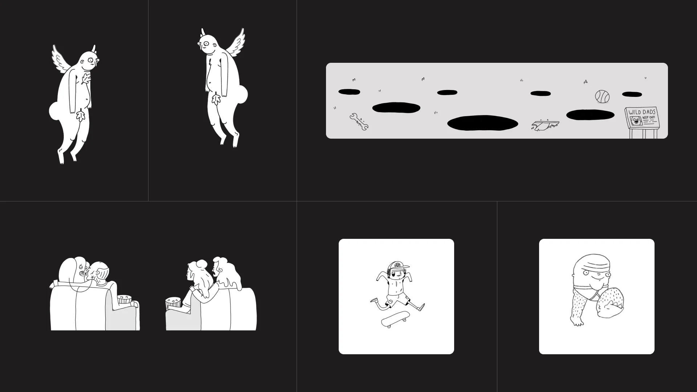

Ugly Magazine
Project Summary
Ugly is an indie comedy magazine that showcases unique and quirky content. The project focused on bold, contemporary designs that capture attention and reflect the magazine’s distinctive voice, resulting in a visually engaging experience that captivates and entertains readers.
Team
- Petros Symeonidis, Program Manager
- Kirsten Van Bruyseel, Web Developer
- Alex Bergmans, Founder
- Molly Alampi, Founder
- Doug Kolbicz, Founder
Shawn’s Role
- Brand Designer
Contributions
- Illustration and animation
- Ad copy
- Customer research
- User journey mapping
- Website design
- Brand guide
- Social ad campaigns and creative




Interaction design
Security conscious hot dog
In designing the login and sign up page for Ugly Magazine, we aimed to inject some joy and playfulness into an otherwise mundane task. To achieve this, we added a security-conscious hot dog to the page. The dog serves to enhance the overall user experience and reinforce the publication’s brand.
This hot dog, which is designed to be both endearing and lighthearted, features interactive eyes that will inaccurately follow the user’s cursor around the screen. As an added security measure, the hot dog will also cover its eyes when the user focuses on the password field, creating an engaging and memorable interaction.


Interaction design
About image and video hover
We designed Ugly Magazine’s about page to reflect the magazine’s absurdist and unexpected tone. The page is presented from the perspective of the physical magazine, telling a story that is in keeping with the publication’s overall sensibilities. In, might I add, wildly exaggerated jumbo typography.
To enhance the narrative experience, we incorporated hover interactions that reveal images or videos that align with the magazine’s unique tone and aesthetics while reinforcing the story. This not only adds an engaging layer of interactivity to the design, keeping users scrolling and enjoying the madness, but also reinforces the overall brand of the publication.

Interaction design
Excessive congratulations confetti
Upon completion of a subscription sign-up for Ugly Magazine, we wanted to offer users a lighthearted and engaging reward. To achieve this, we developed an absurd and fun confetti animation that evokes a sense of accomplishment, but not without having a tongue in cheek.
The exaggerated animation features an eye-catching display of exploding confetti that attacks the screen unexpectedly.
By adding this touch of absurdism to the subscription process, we are able to create a memorable experience for our users, while also, again, reinforcing the overall tone and personality of the Ugly Magazine brand.